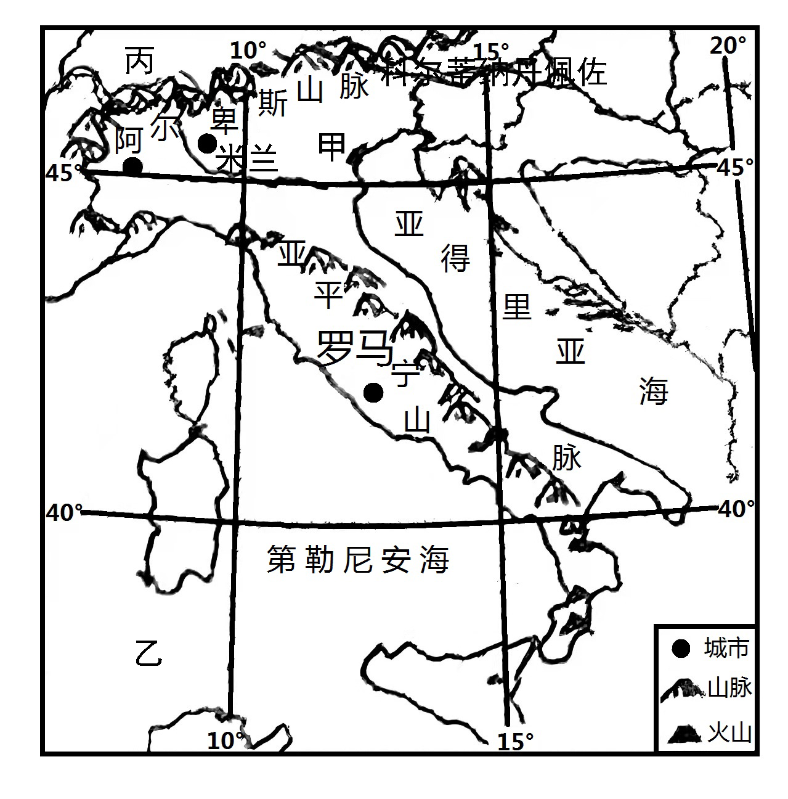
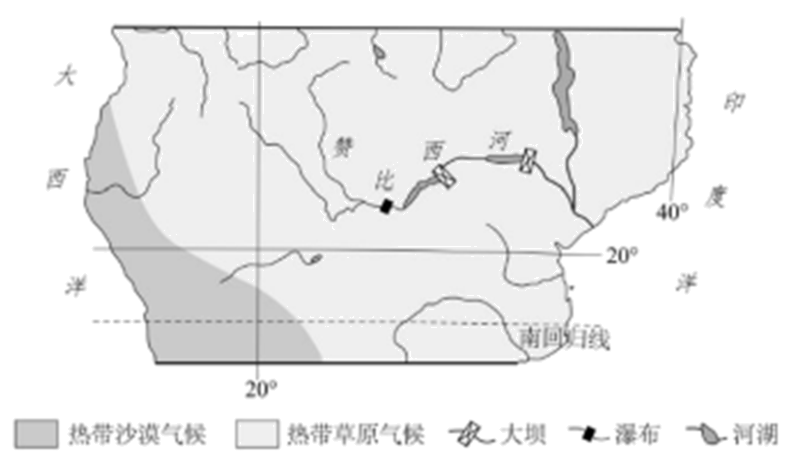

2022年北京市中考地理真题 · 选择题 第21、22、23、24、25题
第25届冬季奥运会将在意大利的米兰和科尔蒂纳丹佩佐两地举办。米兰是国际时尚之都和意大利第二大城市，科尔蒂纳丹佩佐是历史悠久的滑雪小镇。图为两地位置示意图。读图，完成下面小题。

21. 两地共同举办冬奥会，利用了（ ）
①科尔蒂纳丹佩佐适宜高山滑雪的地形②科尔蒂纳丹佩佐原有的滑雪基础设施
③米兰的经济实力和文化影响力④米兰沿海和沿河的便利交通
A. ①②③B. ①②④C. ①③④D. ②③④
22. 冬奥会的举办可以（ ）
①促进国际经济和文化交流②带动全球冰雪运动发展
③缩短参赛国间的空间距离④增加承办地的就业机会
A. ①②③B. ①②④C. ①③④D. ②③④
赞比西河是世界水能最丰富的河流之一。图为非洲局部图。读图，完成下面小题。

23. 赞比西河（ ）
A. 自东向西流B. 流经热带草原C. 注入大西洋D. 属于内流河
24. 赞比西河的水文特征是（ ）
A. 结冰期长B. 流量季节变化小C. 冬季断流D. 水量大、流速快
25. 过度开垦、过度放牧等人类活动会导致图示地区（ ）
A. 土地荒漠化加剧B. 台风侵扰增加C. 低温冻害频发D. 雨林破坏严重